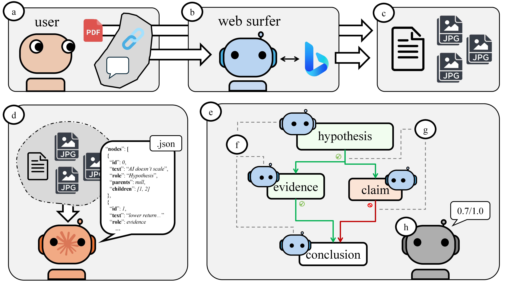
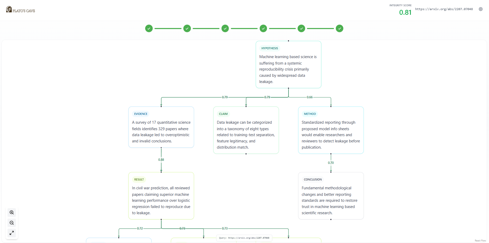
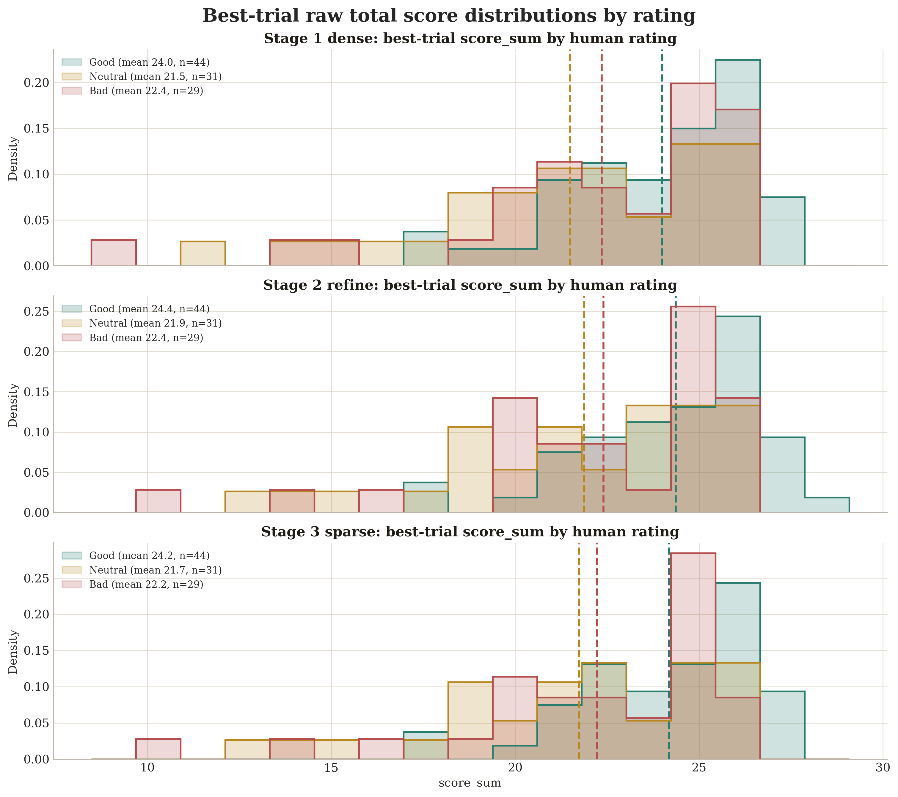
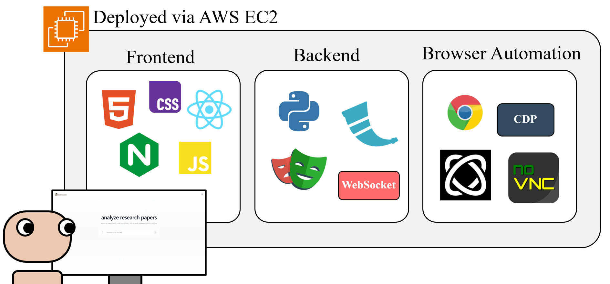

The growing publication rate of research papers has created an urgent need for better ways to fact-check information, assess writing quality, and identify unverifiable claims. We present Plato's Cave as an open-source, human-centered research verification system that (i) creates a directed acyclic graph (DAG) from a document, (ii) leverages web agents to assign credibility scores to nodes and edges from the DAG, and (iii) gives a final score by interpreting and evaluating the paper's argumentative structure. We report the system implementation and results on a collected dataset of 104 research papers.
Plato's Cave operates as a six-stage pipeline, transforming a raw PDF into an auditable integrity score.
Accepts a PDF upload or URL, extracts the full text from the document.
Breaks the paper into atomic claims using an LLM, identifying each semantic unit for downstream analysis.
Structures claims as a directed acyclic graph (DAG) with role-aware nodes (Hypothesis, Evidence, Method, Conclusion) and dependency edges.
Dispatches browser-based AI agents running in Docker containers to independently verify each claim against external sources.
Aggregates agent findings, scoring each node on six dimensions: credibility, relevance, evidence strength, method rigor, reproducibility, and citation support.
Propagates trust through the graph using role-aware edge confidences and trust gating, producing a final integrity score.

Evaluated on a collected dataset of 104 papers spanning Economics, ML/Computing, and Psychology with coarse triage labels (Good / Neutral / Bad).

| Search Stage | Best AUROC | Best Spearman |
|---|---|---|
| Dense search | 0.7025 | 0.313 |
| Refine search | 0.7594 | 0.395 |
| Sparse stage-3 | 0.7658 | 0.401 |

@article{maldaner2026platoscave,
title = {Plato's Cave: A Human-Centered Research Verification System},
author = {Maldaner, Matheus Kunzler and Valle, Raul and Kim, Junsung
and Sultan, Tonuka and Bhargava, Pranav and Maloni, Matthew
and Courtney, John and Nguyen, Hoang and Sawant, Aamogh
and O'Connor, Kristian and Wormald, Stephen and Woodard, Damon L.},
year = {2026},
eprint = {2603.23526},
archivePrefix = {arXiv},
url = {https://arxiv.org/abs/2603.23526}
}